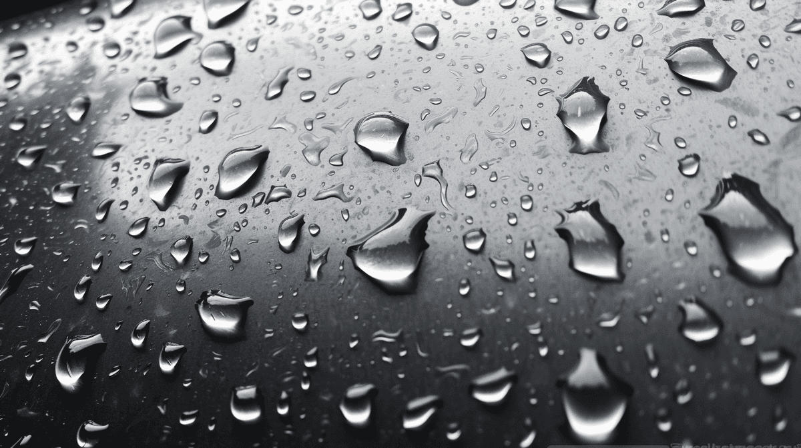
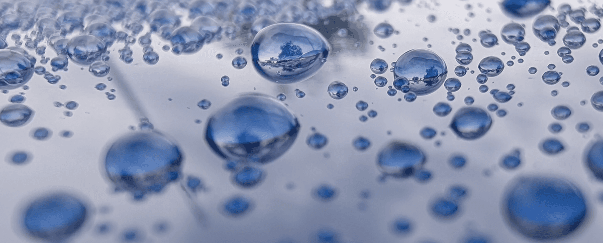
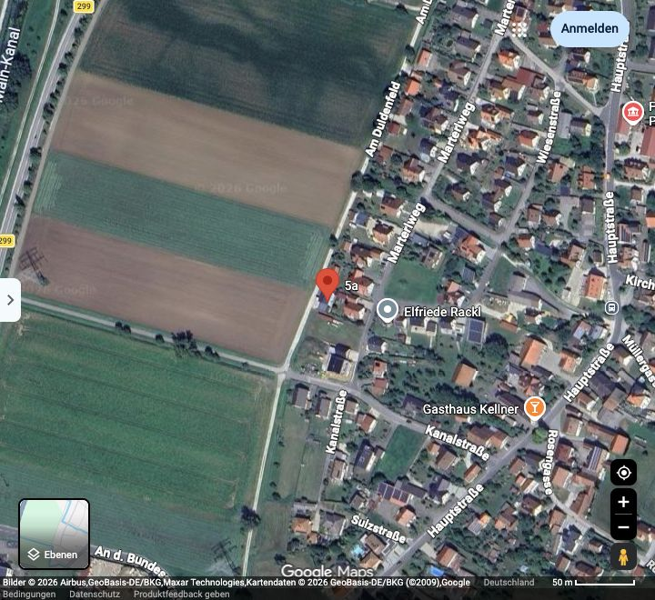
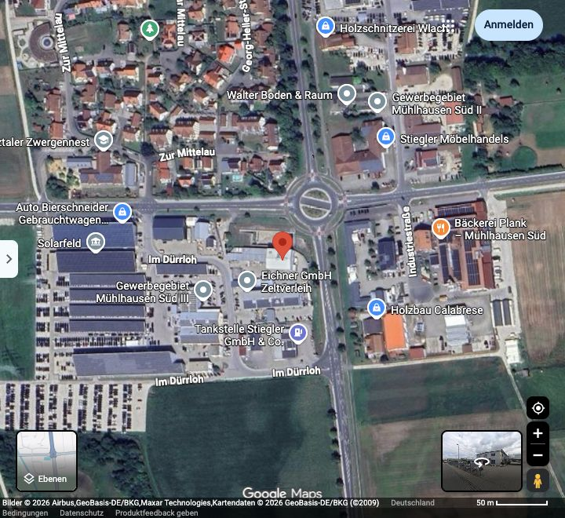

Versiegelungen & Lackdefektkorrektur
Ich habe mich auf die nachhaltige Verfeinerung von Oberflächen spezialisiert und die dazugehörige Lackdefektkorrektur in Perfektion immer weiter ausgebaut.
Ihr kompetenter Partner rund um das Thema Versiegelungen
Ich habe mich auf die nachhaltige Verfeinerung von Oberflächen spezialisiert und die dazugehörige Lackdefektkorrektur in Perfektion immer weiter ausgebaut.
Als zertifizierter Anwender namenhafter Hersteller biete ich Ihnen abgestimmte, hochwertige Pflegeprodukte.
Langjährige Erfahrung, eine Vielzahl an Herausforderungen und die Leidenschaft zum Detailing, erfüllen mit Sicherheit Ihre Bedürfnisse.
Die Hochleistungspartikel der 2K-Keramikbeschichtung verbindet sich chemisch mit der Oberfläche und legen sich über die Lackporen. Sie bilden nach der Aushärtung eine hochglänzende Schutzschicht. Diese Oberflächenoptimierung schützt den Lack vor Schäden, wie Oxidation, Salz, Säure und Insekten.

Es hat die gleichen Eigenschaften, wie 2K-Keramik, mit Ausnahme der Standzeit und Oberflächenhärte. Wird auch gerne bei schwierigen Lacken (Uni, Nitro, Oldtimer, usw.) verwendet. Eine ausführliche Erklärung gerne auf Anfrage.

Graphen-Beschichtung kombiniert die Vorteile der 2K-Keramik mit erhöhter Standzeit, höherer Festigkeit und einer noch edleren Optik.

UnternehmenssitzBerchingMarterlweg 5a
92334 Berching

AußenstelleMühlhausenIm Dürrloh 5
92360 Mühlhausen
Marcel Kaatz
Marterlweg 5a
92334 Berching
Im Dürrloh 5
92360 Mühlhausen
Marcel hat sich kürzlich um meinen R8 RWS Spyder gekümmert und dabei echt tolle Arbeit geleistet! Am Auto wurde dabei folgendes gemacht: Keramikbeschichtung, Verdeck Imprägnierung, Scheiben Versiegelung, Lackschichtdickenmessung, Innenraumreinigung und Lederpflege. Ich kann euch Marcel gerne und uneingeschränkt weiterempfehlen!
Ich lasse meinen geliebten (mittlerweile) Oldtimer seit 11 Jahren regelmäßig vom Marcel bearbeiten, er hat mich schon durch viele (Lack) Katastrophen begleitet und immer gerettet.
Super mega gut geworden vielen Dank
Vielen Dank für den tollen Service und die mega tolle Arbeit . Bin vom Ergebnis total begeistert! Sehr zu empfehlen ! Auf jeden Fall gerne wieder !
Ein sehr erfahrener Mann der sein Handwerk meistert wie kein anderer. Kann ich jedem nur ans Herz legen, wenn man auf Qualität Wert legt. Besonders begeistert bin ich von der Kommunikation sowie von der Kundenorientierung von Marcel...
Sehr informative Schulung über die Polier und Beschichtungstechnik
Top!!. Gerne jederzeit wieder!. Total freundlich und eine sehr gute Arbeit. Habe das Volle Programm genommen (Keramik inkl. Felgen + Bremssättel + Das gesamte Auto.! Die Veränderung wie es davor war und danach ist der Hammer. Empfehle auf alle fälle weiter bei ihm die Veredelung zu machen...
Unsere Auto bekam eine Keramikbeschichtung. Es bestanden zunächst Bedenken, ob dies bei einem Neuwagen überhaupt Sinn macht, aber wir wurden eines Besseren belehrt. Nicht nur, dass der Wagen nach der Behandlung auch an den Stellen, die nur schwer zugänglich sind glänzt und blinkt...
Haben unseren geliebten Oldtimer in diese professionellen Hände gegeben und waren mehr als zufrieden mit dem Ergebnis! Das Auto wurde bei uns zu Hause poliert und zweifach keramikversiegelt. Wir wurden über die einzelnen Arbeitsschritte sowie die schwierigen Stellen des Lacks ausführlich beraten...
Sehr saubere Arbeit, bis ins Detail! Keramik Versiegelungen level endgegner 👍🏻 Vielen Dank Marcel
Netter sympathischer Kontakt. Saubere und ausführliche Arbeitsweise. Guter Lehrgangsleiter mit reichlich Erfahrung.